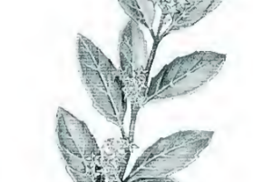

NERPRUN ALATERNE
FLoraison
Février - Avril
Get arbuste a ecorce grise et au feuillage persistant est peu exigeant et se rencontre autant sur silice que sur calcaire. Ses feuilles alternes, coriaces et luisantes sont munies de dents espacées et affutées qui peuvent les faire confondre avec celles du houx...
Propolis
Nectar 3
Pollen 1